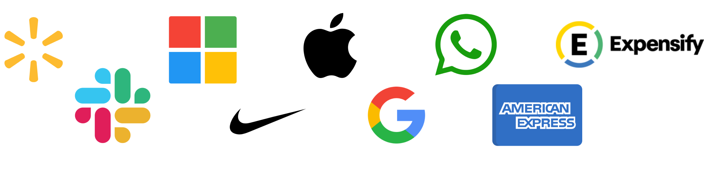

Jul 2023 / 3 min to read
Outsourcing
TechTrends
The global outsourcing market is strong, with larger companies such as Apple, IBM, and Cisco Systems outsourcing more technical tasks like accounting,
IT services, and digital marketing.
As a result of outsourcing, these companies gain the following benefits:
- - Avoid the time and financial expense of hiring, training, and managing people in-house.
- - Access to a larger talent pool of skilled workers from around the world.
- - Increased productivity by freeing up internal resources to focus on core business functions.
- - Improved quality by gaining access to experienced and specialized workers.
Companies That Outsource Staffing

Some companies that you might not know outsource staffing include:
WhatsApp: The company's technical and development teams were in Russia, while its offices in Mountain View, California housed just 30 employees.
Slack: The company's founders hired a design agency to polish their early prototype, design their logo, website, and the web and mobile apps.
American Express: The company has been outsourcing customer support for decades.
Google: Google has outsourced customer support as well. By 2018, about half of Google's staff were not in-house employees but outsourced contractors.
Expensify: This software company outsources the development of their back-end system and sales.
Microsoft: The software giant is believed to have as many outsourced staff as they have in-house employees.
Apple: The iPhone is designed in California but manufactured in China.
Walmart: The company makes most of its products in China, including finance and accounting services.
Nike: The company has manufactured its sportswear overseas since its inception.
Is Outsourcing Staffing Right for Your Business?
There are many factors to consider when deciding whether or not to outsource staffing. Some of the most important factors include:
The specific tasks that you need to outsource.
Your budget.
The level of control that you want to maintain over the outsourced work.
The security of your data.
If you decide that outsourcing staffing is right for your business, there are a few things you can do to make sure that the process is successful:
Do your research and choose a reputable outsourcing provider.
Set clear expectations with the provider.
Monitor the work closely and provide feedback as needed.
Conclusion
Outsourcing staffing can be a great way to save money, improve efficiency, and access a wider talent pool. However, it's important to carefully consider the factors involved before making a decision.
How hubinit Can Help
hubinit is a leading provider of on-demand teams as a service. We can help you find the right talent for your needs, manage your outsourced team, and ensure that your data is secure.
We have a proven track record of success in helping businesses of all sizes outsource staffing. We're committed to providing you with the best possible service and ensuring that your outsourced team is a valuable asset to your business.
by Larissa Pazini
hubinit, COO
You May Also Like
23 Nov 2023
hubinit Unveils Revolutionary AI-Powered Collaboration Suite
23 Nov 2023
hubinit Unveils Revolutionary AI-Powered Collaboration Suite
23 Nov 2023
Hubinit Unveils Revolutionary AI-Powered Collaboration Suite
Jul 2023 / 3 min to read
AI vs Machine Learning vs Deep Learning
TechTrends
You know the adage — the velocity of technological transformation is quickening. It’s capricious and unparalleled. As recognized by the World Economic Forum in its Future of Jobs report, we are stepping into a fourth industrial revolution:
Innovations in distinct fields such as artificial intelligence and machine learning, robotics, nanotechnology, 3D printing, and genetics and biotechnology are synergistically enhancing one another. By 2020, on average, more than one-third of the essential core competencies of the majority of occupations will consist of skills not yet deemed vital today.
The secret to thriving in this new industrial revolution is to lead it. This necessitates two critical components of agile organizations: awareness of disruptive technology and a strategy to cultivate talent that can harness its potential.
10 technologies set to revolutionize the global economy by 2025
As numerous technologies emerge across various domains, staying ahead is a challenge. Each breakthrough is hailed as “the next big thing.” Merging insights from The McKinsey Global Institute and Pluralsight’s subject-matter experts, we have assembled a list of 10 technologies that will spearhead the fourth industrial revolution. As the Institute notes, “Not every emerging technology will alter the business or social landscape — but some truly do have the potential to disrupt the status quo, alter the way people live and work, and rearrange value pools.”
1. Mobile Internet
Interfaces, formats, sensors, and apps will transform as mobile computing devices take charge of internet connectivity. By 2025, an additional 4.3 billion people could access mobile connectivity.
2. Artificial Intelligence
Machine learning and user interfaces, such as speech and gesture recognition technology, will advance to boost productivity or even eliminate some knowledge work altogether.
3. Virtual and Augmented Reality
Goldman Sachs envisions the virtual and augmented reality industry becoming an $80 billion market by 2025 – currently, it’s around $7 billion. Significant upgrades will come to technology infrastructure, and an ecosystem of apps will emerge for both consumers and enterprises.
4. Cloud Technology
One of the past decade’s most prominent buzzwords will continue to shape the next. Almost all IT services and web apps could be delivered through the cloud, with more enterprises utilizing the public cloud as cybersecurity improves.
5. Internet of Things
Over 9 billion devices are presently connected to the internet – that number is predicted to rise to 50 billion to nearly 1 trillion in the coming decade. Organizations will be tasked with monitoring and securing products, systems, devices, and even people.
6. Advanced Robotics
Progress in artificial intelligence, machine vision, sensors, motors, hydraulics, and materials will transform the delivery of products and services. A surge in tech talent for building, operating, and maintaining advanced robots will take place.
7. Biometric Technology
A recent survey of security professionals disclosed that 72 percent of companies plan to abandon traditional passwords by 2025. This will usher in new authorization services for face, voice, eye, hand, and signature identification.
8. 3D Printing
3D printing could enable unmatched levels of mass customization and significantly reduce supply chain costs, generating an estimated economic impact of $230 to $550 billion annually by 2025.
9. Genomics
Genetic engineering technology will expand with faster computer processing speeds. DNA sequencing technologies and advanced analytics will enhance agricultural production, decrease reliance on fossil fuels, and extend human life expectancy.
10. Blockchain
Blockchain is best known in the context of virtual currency Bitcoin, but a recent report demonstrated 64 different use cases of blockchain across 200 companies. Streamlined, secure contracting and transacting will propel commercial use.
Wildcard: Quantum Computing
The application and adoption of quantum computing remain uncertain, but the technology is moving beyond the hype. Google
Ready to ride the tech wave with a sprinkle of humor? hubInit‘s on-demand teams are your ultimate secret weapon! We’ll help you conquer the Fourth Industrial Revolution faster than a robot barista brewing your morning coffee. Are you in
by Larissa Pazini
hubinit, COO
You May Also Like
23 Nov 2023
hubinit Unveils Revolutionary AI-Powered Collaboration Suite
23 Nov 2023
hubinit Unveils Revolutionary AI-Powered Collaboration Suite
23 Nov 2023
Hubinit Unveils Revolutionary AI-Powered Collaboration Suite
Jul 2023 / 3 min to read
Hubinit Unveils Revolutionary AI-Powered Collaboration Suite
TechTrends
The global outsourcing market is strong, with larger companies such as Apple, IBM, and Cisco Systems outsourcing more technical tasks like accounting,
IT services, and digital marketing.
AI may be broadly classified into four types:
- 1. Machine that reacts
- 2. Restricted memory
- 3. Mind Theory
- 4. Consciousness
Artificial intelligence applications include:
- - AI in healthcare
- - Voice recognition, text recognition, and picture recognition
- - AI in gaming
- - AI in cybersecurity
- - AI in social media
- - AI in robotics
- - AI in entertainment, agriculture, E-commerce, education, and so on
Machine Learning is a set of algorithms that evaluate data, learn from it, and make intelligent decisions according to the knowledge gained. Machine learning may result in a wide range of automated jobs. It has an impact on almost every area, from IT security malware detection to weather prediction to stockbrokers seeking the best deals. To accomplish the required functionality and outcomes, machine learning necessitates complicated arithmetic and a large amount of coding. Machine learning integrates traditional methods for a range of functions such as grouping, modeling, and classification. These algorithms must be trained on massive volumes of data. The more data you feed your algorithms, the superior your models become.
Types of Machine Learning:
Machine Learning is classified into four categories based on the methodologies and strategies used to instruct machines:
Supervised Machine Learning
This sort of ML approach trains systems with labeled datasets, and the machines estimate the results depending on these sets of data. It requires supervision to build models and forecast outcomes. Some of the most significant applications of supervised machine learning include image segmentation, medical diagnosis, fraud detection, spam detection, speech recognition, and so on. Supervised machine learning may be divided into two problems: classification & regression.
Machine Learning Without Supervision
Unsupervised machine learning is the polar opposite of supervised machine learning. The technique does not require supervision, unlike supervised machine learning, and so does not need marked datasets to train computers. As a result, the outcome of unsupervised machine learning is projected. The unsupervised learning algorithm's main goal is to classify or group unordered information based on similarities, patterns, and differences. Unsupervised machine learning has several applications, including network analysis, recommendation engines, anomaly detection, singular value decompositions, and so on. Unsupervised machine learning is divided into two types: clustering & association.
Semi-supervised Machine learning
Semi-supervised learning combines supervised and unsupervised machine learning. Although it trains algorithms and predicts output using both labeled and unlabeled datasets, it typically employs unlabeled datasets.
Learning through Reinforcement
Reinforcement learning is described as a commentary strategy for learning from previous experiences and improving the quality of the model. An AI agent autonomously examines its surroundings using striking and test actions in this manner. Moreover, computers in algorithms that use reinforcement learning acquire knowledge based on experience or previous data rather than labeled data. It may be used in a variety of real-world applications such as video games, resource management, robotics, text mining, operations and research, and so on. Reinforcement learning is divided into two types: positive reinforcement learning & negative reinforcement learning.
There are 7 simple steps involved in machine learning:
Data collection
Data pre-processing
Choose model
Train model
Evaluation model
Tune model
Prognosis
Deep Learning is a relatively new artificial intelligence topic based on artificial neural networks. Because deep learning algorithms require data to learn and find solutions, it’s classified as a subsection of machine learning. The words machine learning and deep learning are sometimes used interchangeably. These algorithms, however, have distinct capacities. Deep learning employs the neural network, a multi-layered structure of algorithms. Deep learning models can tackle challenges that machine learning models cannot. This is due to the unique characteristics of artificial neural networks.
Deep learning is responsible for all recent improvements in IQ. We wouldn't have developed self-driving vehicles, chatbots, or voice assistants like Alexa and Siri without deep learning. Google Translate would remain crude, and Netflix wouldn't have any notion of what movies or TV shows to recommend.
Deep learning proceeds in a series of basic steps.
Determine the weighted sum.
Use the scaled total as a response for the input signal.
The activation function adds bias and determines the degree to which the neuron should be stimulated.
In the output layer, predict the output.
Compare projected and actual output and utilize the backpropagation approach to improve the model's performance. At this phase, the cost function is critical in lowering the error rate. Types of deep neural networks.
There are some different types of deep learning networks available:
Feed-forward neural network
Radial basis function neural networks
Multi-layer perceptron
Convolution neural network (CNN)
Recurrent neural network
Modular neural network
Sequence-to-sequence models
Deep Learning Applications:
Fraud detection
Natural language processing
Virtual personal assistance
Text, speech, and image recognition
Automatic game playing
Auto handwriting generation
Automatic language translation
by Larissa Pazini
hubinit, COO
You May Also Like
23 Nov 2023
hubinit Unveils Revolutionary AI-Powered Collaboration Suite
23 Nov 2023
hubinit Unveils Revolutionary AI-Powered Collaboration Suite
23 Nov 2023
Hubinit Unveils Revolutionary AI-Powered Collaboration Suite